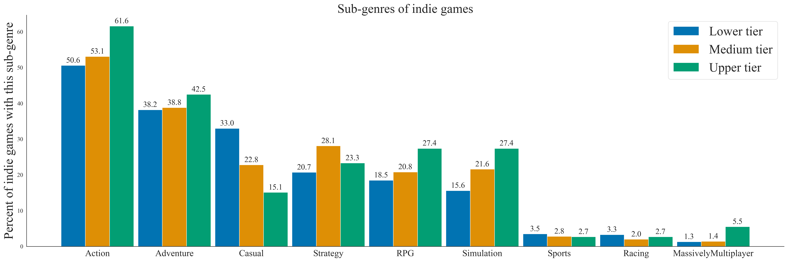
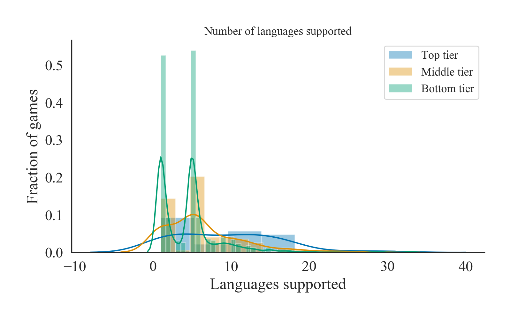

Data science case study: Should I develop an indie game?
Another project that I embarked on is based on another passion of mine: gaming.
Many a time I spend hours mining little blocks or hoping for a rare weapon drop in Terraria. I have cooperated with friends to survive various encounters that Don't Starve Together throws at innocent players. All of these experiences were relaxing and deeply enjoyable, and I have indie games to thank for it.
The enjoyment is not mine only: about 8 million players share my passion about Terraria and more than 5.3 million players fight with mechanics and creatures in Don't Starve Together, and that's only on Steam.
These numbers led me to pose a question: how to create a good indie game? What makes the games I like so much to stand out from a crowd of computer/console games? My question can also be translated into an interesting business problem: if I was a small game development company that wants to create something that stands out (Terraria was no 1 best-selling game on Steam nine years after its release ) what features should my game have?
To answer this question I will be using a dataset that describes approximately 10 000 games available on Steam. From these games, I will look only at paid games (so no free/ subscription-based games) that are owned by more than 100 people. The estimate of the game owners comes from SteamSpy.
Cleaning and processing the dataset
As mentioned before I will be considering only Steam games that are not free and have more than 100 owners. The dataset needs some cleaning like removing duplicates and removing/replacing empty values. The dataset contains information about genre tags of the game. These tags create columns in the dataset with True value whether this game has this genre tag, False otherwise. I have mapped True/False values to 1/0 to aggregate the data more easily. The dataset contains a field that shows which languages are supported, expressed as a string. I split the string on the ", " to obtain languages the game supports and their count. Game descriptions provided by a developer are also included in the dataset, and I parse them removing any capital letters, numbers and punctuation marks.
Indie games on Steam
Overall, investing in an indie game is not a good idea. About 62% per cent of all Steam games that are not free are classified as an indie game. For comparison, RPG games comprise about 16.7% of what Steam has to offer and games with genre sports are mere 3.9%. This means that even a good product will have a problem to stand out.
Another interesting question is revenue that one expects from an indie game. Figure below shows the distribution of owners of an indie game. We can see that the dataset is highly skewed, with the majority of the games having about 1500 owners. The average price of an indie game is about $8.7, and the average number of players is 88000, which will give an average revenue per game of $790 000. If we look at medians, however, the outcome is much bleaker and the revenue is only $90 000 (12 000 players per game with a mean price of $6.99).The Figure shows mean owners of the game in different genres vs the mean game price in the genre.
A 'good' indie game is also an elusive idea. Majority of this type of games do not follow liked and popular pattern that gamers are familiar with and will cause them to buy the game. Indie games usually do not belong to franchises or follow in series. Very rarely they are based on films or books. Otherwise, they should be irreverent, quirky, interesting, and therefore can be a risk if a novel idea does not 'land' with the gamers. This can discourage from funding indie games. This article looks at available data about indie games and tries to see what common feature the most popular indie games have.
Tiers of indie games
I have divided all indie games into three tiers based on the number of owners. The tiers are unequal in the number of games but each tier has the same total number of owners. With that, there are 73 titles in top-tier of owned games, 356 of games in the middle tier and 5940 in the bottom tier.
Game description parsing
First I am going to consider game descriptions. I have parsed text of game descriptions available on steam to look for n-grams. An n-gram is a phrase of n words that in the text are next to each other. For example a sentence "Indie games are a subject of this article" we have 8 unigrams "indie", "games", "are", "a", "subject", "of", "this", "article"; 7 bigrams: "indie games", "games are", "are a", "a subject", "subject of", "of this", "this article" and so on. Normally words like "are, a, of this" (so-called stop words) are omitted from n-gram creation because they bring negligible information. I have analysed most popular unigrams, bigrams and trigrams of all three tier of games and did not see any phrases that appear unique to one of the tiers.
What are other genres that indie games have in common?
The games in the dataset do not have a unique genre. A game can have multiple genre tags and I am going to see what other genres appear the most in conjunction with a game being classified as an indie. Majority of indie games from top tier are additionally classified as action (61.6%) and adventure (42.5%).
Interestingly, more middle-tier-games are classified than strategy than other games: 28.1%, compared with 23.3% for top-tier and 20.7% for the bottom tier.
Bottom-tier games are dominating in tags like casual (33%, compared with 15.1% for top-tier and 22.8 for middle tier), sports and racing.
From the data, one might be tempted to assume that creating of 'adventure' game will make the game more likely to be more purchased. One has to be wary, however, because 'adventure' and 'action' tags are more general and can be applied to a wider array of games than more specific tags like sports or racing.

Supported operating systems, multiplayer, coop and level generation
The dataset also contains information about qualities of the game that are not associated with the genre of the game. For example, the dataset can tell what operating platform the game is available on (Windows, macOS or Linux) and whether the game has single-player, multiplayer and cooperative modes. It can also show whether the game contains in-app purchases, has level editor and VR and controller supports.
From the data, it can be seen that most top-owned games support operating systems different than Windows. It can contribute to the popularity of these games enabling a more diverse range of players to purchase these games. However one has to be careful because the reverse can be also true: popular, well-crafted titles are developed by bigger teams that can easily release them on multiple platforms. Or even thinking about it from a third angle: when the game becomes popular it can be translated to a new operating system by a specialised company.
While similar percentages of all tier of games support single-player games, about 41.1% of top-tier games supports cooperative play. This is more than twice the percentage of the middle-tier games that support cooperative gaming and more than 4.5 times than bottom-tier ones.
Multiplayer feature is also popular in the top-owned games: 50.7% of them have this feature. In middle-tier games, 35.1 % of games have this feature and bottom tier games 22.9% can be classified as a multiplayer.
The higher percentage of top-tier games also includes level editor, 26.0% compared with 13.2% and 5.4% for middle- and bottom-tier games respectively.
It seems like giving players more freedom and allowing them to play with friends contributes to people willing to buy an indie game. It can also lead to increased exposure to these games: players will want to play with their friends and recommend them a given title. This way the game can be 'advertised' by word-of-mouth.
Languages
Top tier games on average support more languages.That can open the games into new markets, but from the data, we cannot be sure if that's part of a reason for the game's popularity or just a correlation. The same arguments that were given to the operating systems can be also applied to languages. More languages available can open the game to new markets, but it can be also a sign of well-thought-out, well-developed games.

DLCs
Additionally, the number of DLCs released can provide us with some information about games popularity. Top-tier games have on average 2.8 DLC's while both middle and the bottom tier has less than one. Again, we don't know what is the significance of this fact unless we can compile this with data about how big was a team developing these games and what was their budget. The only way of quantifying it in this data set is to analyse developer count, that is how many developer companies worked on a project (private person counts as one). For all the tier of games, both the mean and median values of this feature are 1 so there is no useful information in this feature.
Recommendation
My recommendation would be not to develop an indie game. The median revenue for an indie game is about two salaries of a game developer and with a sea of indie games available on Steam, it will be difficult for any product to stand out. This is additionally supported by the analysis of the description of indie games, which show no discernible features that differentiate top-tier from the bottom tier of games. From the dataset we can pick up several features that are correlated with the game having a lot of owners: available cooperative mode, presence of level generator, availability on operating systems different than Windows, multiple supported languages and DLCs releases. These features point to the fact that the success of an indie game can be associated with the size of the developer team and available funds. To further investigate and substantiate my claim I would like to gather data about details of the production of indie games: associated costs, number of developers, spend on marketing, timelines.